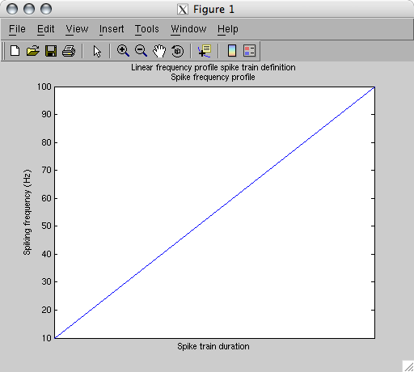
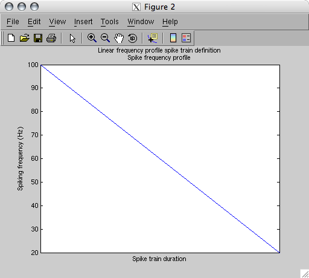

| Spike Toolbox |
|
Spike Toolbox tutorial
Generating spike trains
 Spike train definitionsInstantiating the spike trains
Spike train definitionsInstantiating the spike trains
Spike train definitions
To create new spike trains, we must use a small set of functions: STCreate, STInstantiate and STMap.
[stTrain] = STCreate('constant', fFreq, ...)
[stTrain] = STCreate('linear', fStartFreq, fEndFreq, ...)
[stTrain] = STCreate('sinusoid', fMinFreq, fMaxFreq, tPeriod, ...)
STCreate, when called using these syntaxes above, will return a new spike train definition object. constant, linear, sinusoid and gamma refer to the available methods for defining the frequency profile of a spike train. See the STCreate documentation for details of these frequency profile definitions.
In this case, let's make two spike trains with linearly changing frequencies:
stRising = STCreate('linear', 10, 100);
stRising will be a spike train definition object describing a train with a linearly-rising instantaneous frequency from 10 to 100 Hz. We will specify the spike train duration when we instantiate the spike train.
stFalling = STCreate('linear', 100, 20);
By using STPlotDef we can examine the spike train definition objects:
figure, STPlotDef(stRising);
figure, STPlotDef(stFalling);
 
STDescribe can also tell us about a spike train object:
STDescribe(stFalling);
--- Spike toolbox version [0.03]
This is a simple spike train definition:
This train contains a definition:
Linear frequency change spike train
Start freq [100.00] Hz ==> End freq [20.00] Hz
Instantiating the spike trains
STInstantiate converts an abstract spike train definition into a specific instantiation of a series of spikes conforming to the definition. A spike train definition describes an idealised frequency profile which will essentially serve as a probability distribution for generating spikes.
[stTrain] = STInstantiate(stTrainDef, <'regular' / 'poisson' / 'gaussian' / 'gamma'>, tDuration <, mCorrelation, fMemTau>)
STInstantiate is a very powerful function; apart from simple regular or poisson spike trains it can create trains from processes with memory as well as sets of trains with an arbitrary correlation structure. See the STInstantiate documentation for details on these more sophisticated options. In this tutorial we'll simply generate poisson spike trains.
stRising = STInstantiate(stRising, 'poisson', 2);
stFalling = STInstantiate(stFalling, 'poisson', 2);
We have now added to our spike train objects a spike train instance for each definition. Using STDescribe again:
STDescribe(stFalling)
--- Spike toolbox version [0.03]
This is an instantiated spike train:
Duration [2.00] seconds
This train contains a definition:
Linear frequency change spike train
Start freq [100.00] Hz ==> End freq [20.00] Hz
|
|
Looking at the trains |